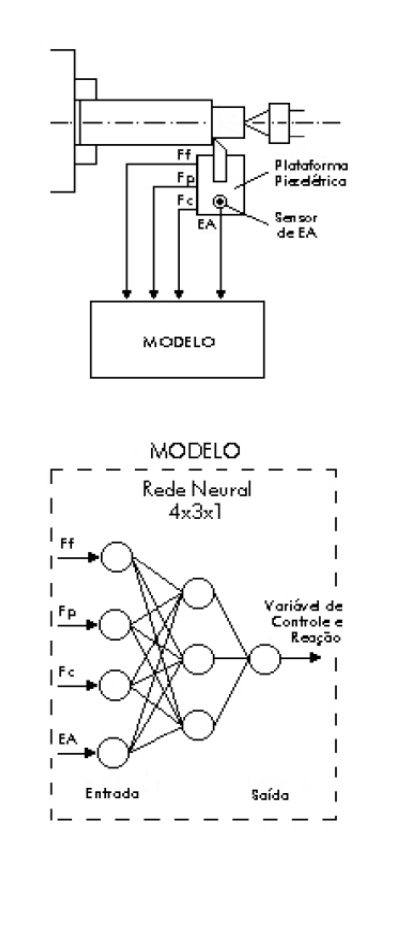

LMP>Linhas de Pesquisa>SIMAP>Fusão de Sensores Através de Redes Neurais
INTRODUÇÃOA necessidade de sistemas precisos e confiáveis na aquisição via sensores dos sinais gerados na usinagem é fundamental nos casos onde o monitoramento e o controle do processo fazem-se presentes. Quando os dados são coletados diretamente, tem-se o problema da parada do processo para que se possa efetuar a medição. A medição indireta, por outro lado, é feita on-line, mas perde-se confiabilidade dos dados obtidos. A solução encontrada foi a elaboração de um sistema multisensores, onde cada sensor torna-se complementar ao outro, aumentando no sistema on-line a confiabilidade dos valores obtidos. Os diversos sinais captados pelos múltiplos sensores, após serem devidamente tratados, são então combinados através de uma rede neural, cuja resposta pode ser empregada como variável de controle e reação do sistema. OBJETIVODesenvolver e implementar um modelo baseado no conexionismo, capaz de realizar a fusão de diferentes sinais captados por múltiplos sensores, de modo a se obter uma variável de resposta adequada a uma possível tomada de decisão. DESENVOLVIMENTO DA PESQUISAA aplicação de um único sensor no monitoramento on-line pode apresentar dados vagos e incompletos, além de poder ser insensível a determinado tipo de alteração no processo. Empregando-se multisensores, a informação de um sensor pode se mostrar fraca e escassa, enquanto que a do outro pode ser segura e robusta. O uso de sensores de força e emissão acústica tem se mostrado eficaz no monitoramento do estado da ferramenta de corte na usinagem de metais, principalmente pela forte relação dos sinais com desgastes e avarias, além da grande capacidade de se auto complementarem. Uma rede neural é capaz de suprimir as informações deficientes de um sinal com relação a um problema detectado, desabilitando a entrada deste e a sobrepondo (através da alteração dos pesos nas conexões entre os níveis da rede) com a entrada dos outros sinais relevantes. Um modelo genérico e flexível, a partir de sinais de força e emissão acústica, será obtido através de conhecimento dedutivo da teoria já existente e disponível, e do conhecimento indutivo, obtido através da realização de testes com variáveis controladas.  Modelo de Fusão de Sensores |
| Contato: SIMAP Walter Lindolfo Weingaertner Prof. Dr.-Ing |
Última Atualização 21.06.2006 |